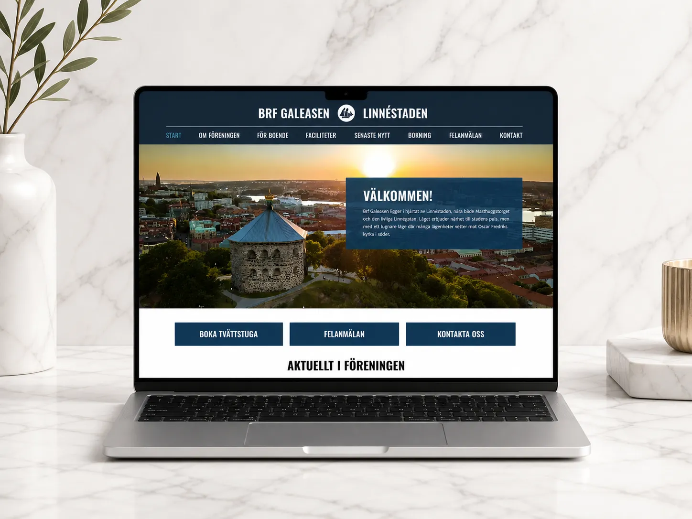
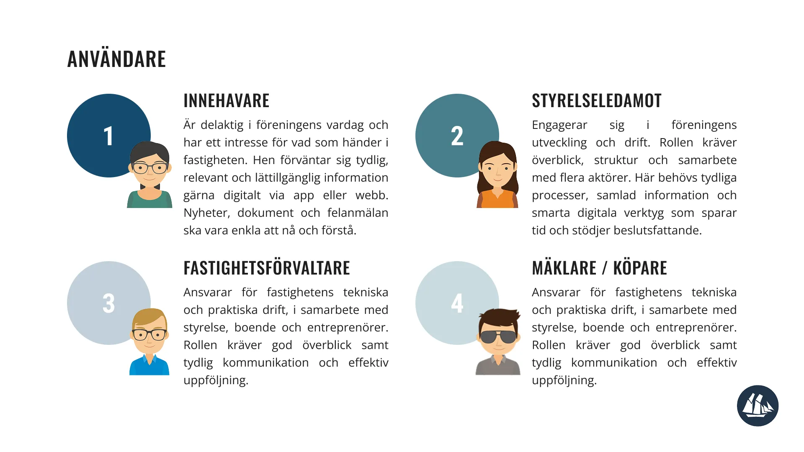

BRF Galeasen is a concept project where we designed a digital ecosystem for a housing association — including a mobile app, a responsive website, and a physical screen placed in shared spaces.
The project was part of a course focused on web design, app design, and physical usability. The goal was to understand how design needs to adapt across different platforms, contexts, and user needs — while still feeling like one cohesive system.
A key part of the course was learning to design not just individual interfaces, but a connected experience, where content, components, and functionality work seamlessly across devices.
Within this project, I explored how to create clear communication flows between residents, the board, and property managers — while making the experience simple, accessible, and intuitive.

We approached the project using design thinking, combined with structured tools like effect mapping and usability principles such as WCAG.
Understanding the ecosystem
The first step was to understand the different users and their needs within a housing association:
— Residents
— Board members
— Property managers / maintenance
We quickly realized that the challenge wasn’t just functionality — it was communication. Information is often scattered, unclear, or hard to access.
Effect mapping & defining goals
To create a clear direction, we worked with effect maps to connect:
— User needs
— Desired behaviors
— Business goals
This helped us focus on why features should exist — not just what to build.

Key focus areas:
— Simplify communication between residents and the board
— Make important information easy to access
— Reduce friction in everyday tasks (e.g. reporting issues)
Design thinking in practice
We followed a design thinking approach:
— Empathize → understanding users and their context
— Define → identifying key problems
— Ideate → exploring solutions
— Prototype → visualizing flows and interfaces
— Test → validating ideas and improving
This iterative process allowed us to continuously refine the experience across all platforms.
Designing across platforms
A central challenge was designing a system that works across:
— Mobile app — for quick, personal interactions
— Responsive website — for more detailed information
— Physical screen — for shared, passive communication
Each platform had different requirements: the app needed to be fast and minimal, the website needed structure and depth, and the screen needed to be glanceable and clear. At the same time, everything had to feel consistent through shared components and visual language.
Usability & accessibility (WCAG)
Accessibility was an important part of the process. We worked with WCAG guidelines to ensure:
— Good contrast and readability
— Clear hierarchy and navigation
— Inclusive design for different users
This influenced both visual design and interaction patterns across all platforms.
Design system & developer handoff
We built the design using existing components and structured everything to be easy to hand over. This included:
— Consistent components and patterns
— Clear specifications and layouts
— Design decisions documented for developers
A big focus was making sure the design wasn’t just visually complete — but also ready to be built.
The result is a connected platform that improves communication and everyday interactions within the housing association.
The solution includes:
— A mobile app for quick actions and personal updates
— A responsive website for structured and detailed information
— A physical screen for shared communication in common spaces
Together, they create a system where:
— Residents can easily stay informed
— Communication becomes more transparent
— Everyday tasks are simplified
Key Learnings — What I Take With Me
— Designing across platforms requires thinking in systems, not screens
— Consistency is key when multiple touchpoints are involved
— Accessibility improves the experience for everyone
— Clear documentation is essential for collaboration with developers
— Always design with context in mind — where and how the product is used